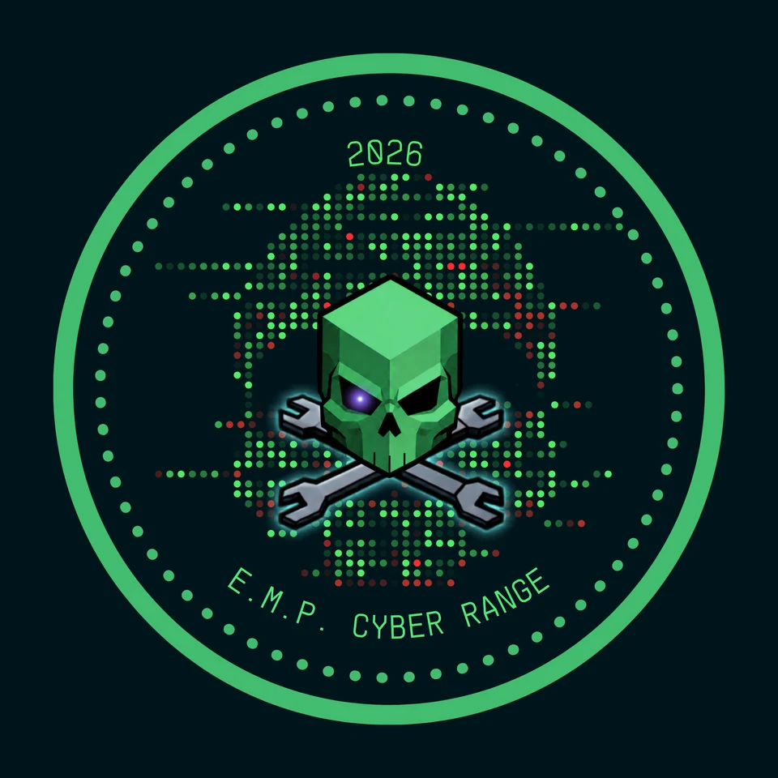

Build the environment
Ludus, Proxmox, and Ansible provide repeatable virtual-machine setups, network segmentation, and reset workflows. Individual range configurations define the systems and connections used in each exercise.
Hands-on security across enterprise networks, factories, robots, and drones. Explore what EMP builds and tests, then find your conference attendee guide.
Explore the ranges
EX MACHINA PARLOR / CYBER RANGE 2026EMP cyber ranges bring systems, tools, and people together for practical security exploration.
We build lab environments where attendees can explore how systems work, test their security, and understand what defenders can observe. Our range projects span enterprise networks, industrial processes, robotics, IoT, drones, and wireless protocols.
Ludus, Proxmox, and Ansible provide repeatable virtual-machine setups, network segmentation, and reset workflows. Individual range configurations define the systems and connections used in each exercise.
Explore identity and file permissions, PLC and HMI communications, ROS 2/DDS, MQTT and CoAP, MAVLink, and virtual 802.11. The robotics example connects factory production to delivery-drone dispatch.
Use protocol captures, application logs, and paired red/blue exercises to connect a test with its effect. The robotics cloud profile adds Security Onion and Velociraptor for network and endpoint investigation.
| Layer | Tools and systems | What we explore |
|---|---|---|
| Enterprise | Windows Server, Active Directory, SMB, Windows 11, Debian / Apache | Identity, permissions, domain services, and connectivity |
| Factory & robotics | GRFICSv3, OpenPLC, ScadaLTS, ROS 2 Jazzy, Modbus, vCAN | Process visibility, middleware trust, and dispatch workflows |
| IoT & drones | Mosquitto, CoAP, MAVLink, ArduPilot SITL, QGroundControl | Sensor exposure, telemetry, and drone-system boundaries |
| Wireless | mac80211_hwsim, hostapd, wpa_supplicant | Virtual WPA2/WPA3 networks and frame analysis |
| Assessment | Kali, Wireshark / tshark, tcpdump, nmap, protocol clients | Discovery, captures, and protocol behavior |
| Cloud-profile defense | Security Onion, Velociraptor | Mirrored inter-VLAN traffic and endpoint evidence |
Tooling varies by range and profile. The supplied robotics cloud profile also declares Mythic and Sliver roles; its documentation marks those integrations as untested. SOC visibility requires crew setup and does not cover every internal or virtual wireless flow.
Use your own device on EMP Wi-Fi, or ask an EMP Range Crew member for KasmVDI access. Confirm your range, exercise, and assigned targets with the crew.
Choose your range for an introduction, a suggested starting exercise, and what to ask the EMP crew before you begin.
Explore a connected factory, smart sensors, delivery-drone telemetry, a vulnerable drone simulator, and virtual Wi-Fi in a segmented Ludus lab.
Attendee guideA six-machine enterprise lab: two domain controllers, a departmental file server, two Windows workstations, and a Debian web server.
Attendee guideRange-day configurations, event records, and walkthroughs from Ex Machina Parlor, with a published EMP-FAK4 network diagram.
Attendee guideA team-based robotics and wireless CTF combining robot piloting, hardware security, and a physical king-of-the-hill objective.
Attendee guideListed projects have public documentation. Live access, event schedules, and deployment readiness are not implied.
Tools, reading, and community knowledge to support your next session.